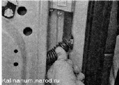
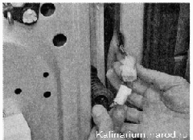
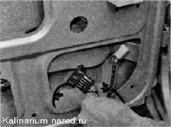

Задняя дверь - снятие и установкаРазбирать и собирать дверь удобнее. когда она установлена на автомобиль При этом меньше вероятность повредить лакокрасочное покрытие. Последовательность разборки задней двери такая же, как при снятии передней двери . Для выполнения работы потребуется помощник. Снятие 1. Снимаем стеклоподъемник. 2. Извлекаем стекло из двери. 3. Снимаем наружную ручку двери. 4. Снимаем замок двери. 5. Отсоединяем гофрированный шланг жгута проводов от стойки. 
6. Разъединяем колодки жгутов проводов.  При разборке двери снимите со жгута проводов гофрированный шланг, а жгут выньте через отверстие двери. 7. Отсоединяем ограничитель открывания двери от стойки. 8. Выворачиваем оси из петель и снимаем так же, как это показано на передней двери. Установка Покрыв рабочие поверхности петель и осей любой пластичной смазкой, устанавливаем и собираем дверь в обратной последовательности. |